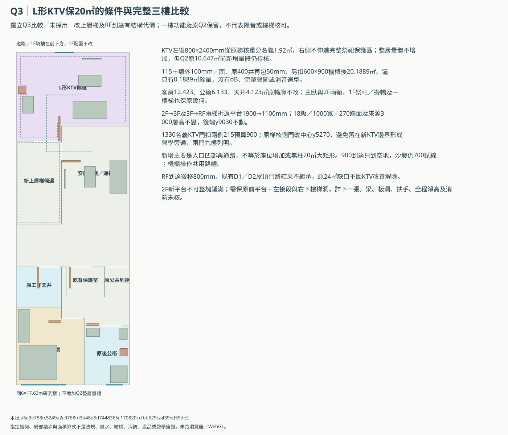
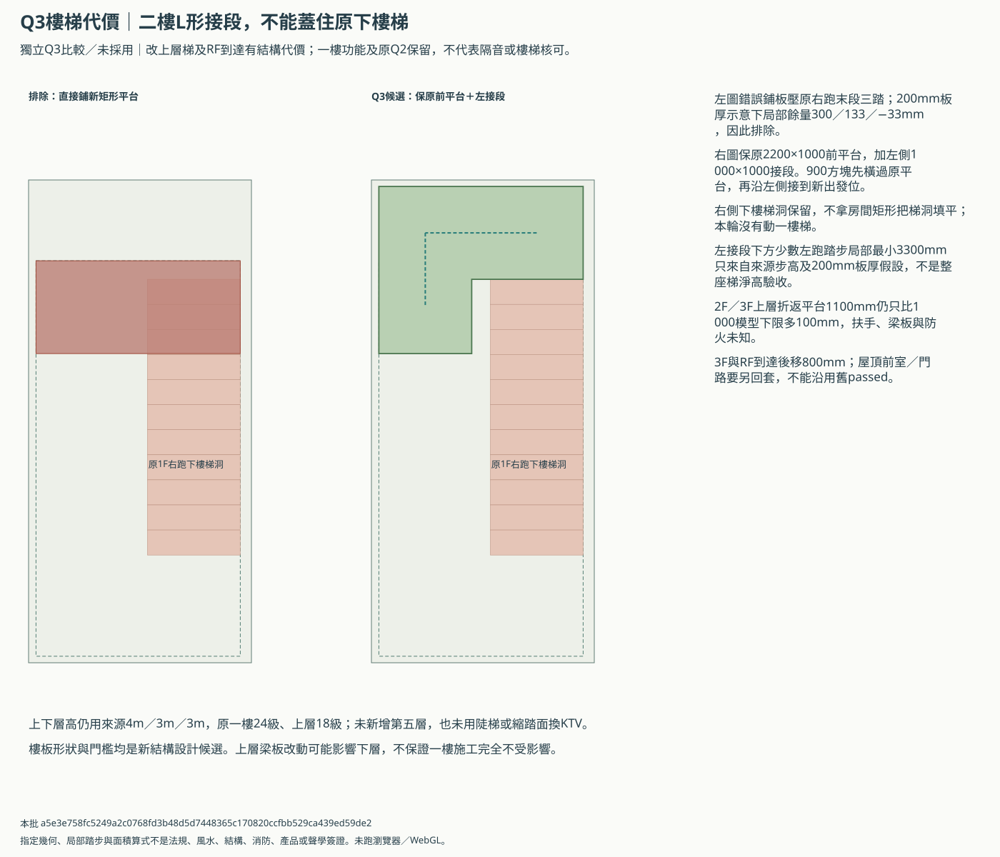
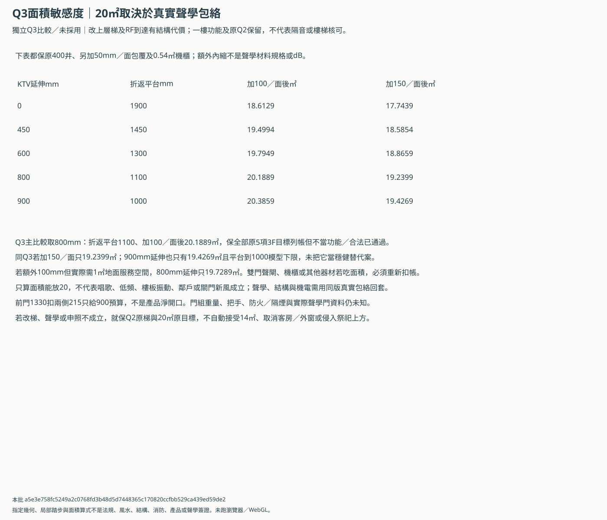

B三樓Q3：L形KTV與上層樓梯重分
獨立比較／未採用。原Q2及其樓梯、RF R／S／D、一樓祭祀及搬轎兩版保留；不改原ABC／3D或正式需求。
Q3釋出上層折返平台前段，L形KTV在115＋100mm／面、原井外包50mm及0.54㎡機櫃後，面積算術可過20；代價是2F／3F樓梯與RF到達必須重設，二樓須保L形接段避免蓋住舊下樓梯。這是有條件的整層比較，不是隔音、梯段或全案已核。Q2原梯與所有需求保留。
在115＋額外100mm／面、原400井另包50mm及0.54㎡機櫃預留後，Q3為20.1889㎡；同口徑Q2僅18.6129㎡。Q3只多0.1889㎡餘量，完整聲學／新風與結構尚未成立。
從既有梯核重分名義1.92㎡，Q2整層量體不增加；原前帶新增10.647㎡的合法量體條件仍保留。二樓、三樓18級出發梯改折返平台1900→1100mm，RF到達後移800mm，屋頂門路須另回套。
完整三樓與兩門九態


二樓L形接段與不能鋪滿的下樓梯洞


什麼厚度／服務面積又會失敗


原三樓需求不取消
| 原需求 | 原目標㎡ | 本輪模型㎡ | 功能／法規 |
|---|---|---|---|
| B.floor-3.flex_b | 14.0 | 29.2948 | 未知 |
| B.floor-3.ktv | 20.0 | 20.1889 | 未知 |
| B.floor-3.bath_b3 | 5.0 | 6.1330 | 未知 |
| B.floor-3.guest_b | 12.0 | 12.4230 | 未知 |
| B.floor-3.balcony_b3 | 4.0 | 4.1230 | 未知 |
樓梯與聲學是同一個取捨
- Q3只作獨立L形KTV／上層樓梯配置研究，原Q1／Q2、RF R／S／D比較與149控制均保留，未採用或併主3D。
- 一樓祭祀、朝街正門、搬轎後門預設／前門備案、武轎庫及一樓樓梯全部保原來源；二樓浴廁／主臥、三樓客房／公衛／天井也保原位置尺寸。
- 只改2F→3F及3F→RF兩段樓梯的前後分配：18級、1000梯寬、270踏面與3000來源層高不減，折返平台1900減為1100mm，1000只是本輪比較下限，不是法規核可。
- 釋出800×2400名義1.92㎡給三樓KTV左後凹部，不向右侵入完整祭祀保護投影。這是既有梯核的室內功能重分，不增加Q2整層量體；Q2前帶新增10.647㎡的合法量體及本次結構仍須核定。
- 二樓不能直接鋪新的全寬矩形平台：會蓋住一樓上來的末段踏步。本案保原前平台，加左側接段，右側原下樓梯洞必須保留。
- 局部踏步／樓板200mm厚度只作靜態碰撞及淨高篩檢；沒有梁、扶手、實際板洞、全程頭部運動與防火證據，不宣稱樓梯或逃生通過。上層結構仍可能牽動下層梁柱，不保證一樓施工不受影響。
- KTV四邊115＋額外100mm、原400井再各邊包50mm並另扣0.54㎡機櫃後，才對20㎡目標列帳；不是挑薄隔音材料來過面積，也沒有dB承諾。
- 新增可用部分主要是左後入口凹部與通路，原沙發／桌位置保留；20.1889㎡不是無柱20㎡矩形大廳，不代表座位、觀影距離或唱歌人數已增加。
- 150／200mm聲學預算、更大機櫃、消音、雙門聲閘或實際梁柱可能再次不足20。原14㎡下限不當屋主已同意縮小，未完成的聲學功能不假稱滿足。
- 前KTV門洞由1130比1330mm，215mm兩側完成面預算後900mm；實際隔音門、門框、把手、淨寬、重量與防火性能仍未知，不當已可採購。
- 原三樓梯核側門中心4400會落在新KTV邊界，本案改到5270避聲學旁通；側門是否需防火／隔煙、與KTV隔音門各三態相容需專業回覆，不能拿樓梯當已核雙門聲閘。
- 原沙發／桌／螢幕尺寸不縮，螢幕內退100mm；新機櫃及操作帶只是預留，操作會共用室內通路，維修時不能堵唯一出入口。
- 室內新風仍須專支及消音，KTV關門不能靠門縫或開梯門。500×300浴廁井不塞一般ERV；香火、浴廁污氣與KTV系統不混接。
- RF到達平台隨上層樓梯後移800mm，既有屋頂D1／D2門路及檢修圖不自動繼承；屋頂前門、側門、前室及維修通行須另回套，原24㎡缺口未解。
- Q3不改2F前排水落管與P3騎樓／梯核缺口，不解除天井在2F更衣乾區上方的防水、R1乾衣或RF全部設備問題。
- 所有方案只保平面投影避已列神明堂／乾背與床體，不當全案家規、風水、振動或梁位已核。若正式資料不成立，保Q2原樓梯與所有功能目標，不自動採Q3。
capacity-cases.csv／door-route-matrix.csv／program-ledger.csv／engineering-replies.csv
本批 a5e3e758fc5249a2c0768fd3b48d5d7448365c170820ccfbb529ca439ed59de2；無瀏覽器／WebGL驗收，無專業或風水核可，不沿用舊屋頂passed。